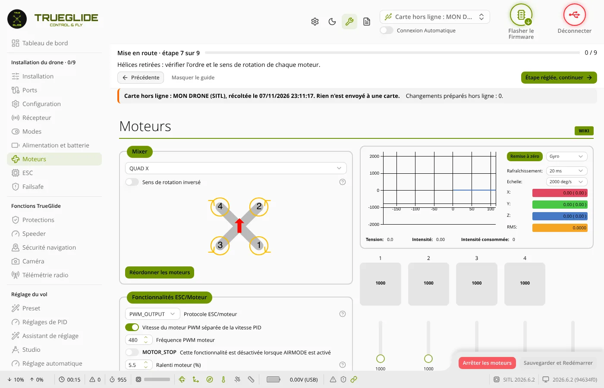

Carte hors ligne
La carte hors ligne garde une copie de votre contrôleur de vol dans le navigateur. Carte débranchée, vous réglez le drone avec les onglets habituels (PID, taux, ports, modes…). Rien n'est envoyé tant que vous ne rebranchez pas la vraie carte et que vous ne confirmez pas l'envoi.

Ce que fait la carte hors ligne
- Elle garde dans ce navigateur une copie de la carte (la récolte) : 3 cartes au plus, une par contrôleur de vol, reconnu par le numéro unique de sa puce et sa cible.
- Pour les cartes connues du logiciel (par exemple la SpeedyBee F405 Mini), c'est une carte simulée : le firmware exact de votre carte tourne dans le navigateur et réagit comme la vraie carte (ports refusés remis par défaut, profils, redémarrage…).
- L'onglet Ligne de commande (CLI) marche aussi hors ligne : seuls les réglages sont gardés ; les commandes qui agissent tout de suite (moteurs, étalonnage, passerelle ESC, effacement…) sont refusées.
- Avant chaque envoi, le logiciel télécharge une sauvegarde de la vraie carte (fichier « …_sauvegarde_avant_envoi_….txt »), gardée aussi dans le Tableau de bord. Pour revenir en arrière : la coller dans l'onglet CLI, puis
save.
1. Récolter la carte (carte branchée)
- Branchez la carte en USB, batterie débranchée, et connectez-vous.
- Tableau de bord : bouton Récolter cette carte. Le logiciel ouvre chaque onglet tout seul (environ 40 s) ; rien n'est écrit dans la carte.
- Une nouvelle récolte de la même carte remplace l'ancienne.
2. Régler hors ligne (carte débranchée)
- Carte débranchée : dans la liste des ports, choisissez Carte hors ligne : <nom du drone>, puis Connexion. Le premier chargement prend quelques secondes.
- Vérifiez le bandeau orange : il signale la carte hors ligne. Sans bandeau, c'est la vraie carte.
- Réglez dans les onglets habituels, puis cliquez sur Sauvegarder (ou Enregistrer) comme d'habitude. Sans ce clic, rien n'est gardé.
- Le compteur Changements préparés monte : il compte les messages envoyés à la carte simulée, pas les valeurs.
- Profils : les changements vont dans le profil choisi. Revenez sur le profil voulu avant de vous déconnecter : c'est celui de la vraie carte après l'envoi.
3. Envoyer à la vraie carte
- Hélices retirées. Rebranchez la vraie carte et connectez-vous : le Tableau de bord reconnaît la carte récoltée et propose Envoyer les changements préparés.
- La question montre exactement ce qui partira. Selon le cas, d'autres questions suivent : « La vraie carte a changé depuis la récolte » (en cas de doute : Annuler, puis nouvelle récolte), et « ATTENTION » si un réglage touche les moteurs, le mélangeur, le failsafe, l'armement, l'orientation, les ports, ou si un PID change fortement (avec la valeur d'avant).
- OK : sauvegarde téléchargée, envoi, enregistrement, redémarrage. À la première commande refusée, rien n'est enregistré. Annuler : rien n'est envoyé.
- Après le redémarrage, le logiciel relit la carte : message « Carte relue après l'enregistrement : … réglage(s) contrôlé(s) un par un, tous en place ». Le compteur revient à 0.
L'envoi est refusé si ce n'est pas la même carte (autre puce ou autre cible), si le firmware a changé depuis la récolte, ou si le profil actif de la vraie carte a changé.
Avec une carte Betaflight
La carte hors ligne marche aussi avec une carte restée sous Betaflight 4.5.4 ou plus récent, sans changer de firmware. Essayée le 8 novembre 2026 sur une SpeedyBee F405 Mini sous Betaflight 2025.12.2 : réglage préparé hors ligne, envoyé, relu, puis vérifié dans Betaflight Configurator. Avec un firmware plus ancien, le logiciel affiche « Firmware trop ancien pour la carte hors ligne ». Les onglets propres à TrueGlide (Protections, Speeder…) ne s'appliquent pas à une carte Betaflight.
En cas de problème
| Ce que vous voyez | Ce que vous faites |
|---|---|
| Pas de « Carte hors ligne » dans la liste des ports | Récoltez d'abord la carte, carte branchée. |
| « 3 cartes hors ligne sont déjà gardées » | Tableau de bord : Supprimer une carte gardée, puis récolter. |
| « Changements préparés : 0 » après un changement | « Sauvegarder » n'a pas été cliqué : refaites le changement et sauvegardez. |
| Pas de bandeau orange | C'est la vraie carte : déconnectez, choisissez « Carte hors ligne : <nom> », Connexion. |
| Envoi refusé : profils différents de la récolte | La vraie carte a changé de profil : débranchez la batterie, ou refaites la récolte. |
| Il faut revenir comme avant l'envoi | Tableau de bord : téléchargez la sauvegarde d'avant l'envoi, collez-la dans l'onglet CLI, puis save. |
Mode d'emploi en images
Mode d'emploi « carte hors ligne » (PDF) : 18 étapes en images, avec un essai des ports UART hors ligne.